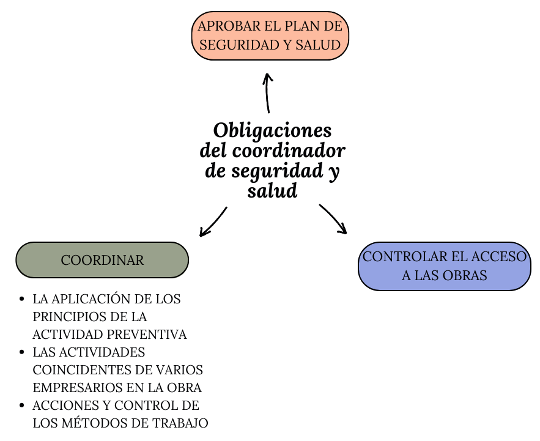
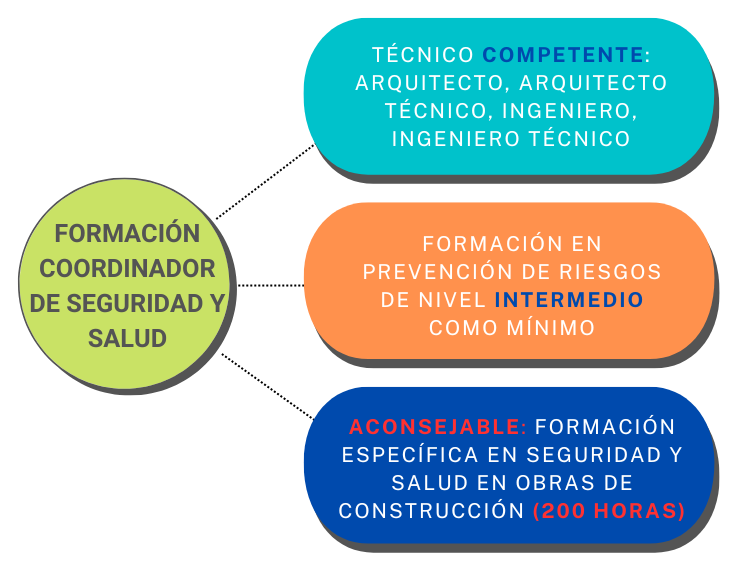

UT 21. ORGANIZACIÓN DE LA PREVENCIÓN EN EL SECTOR DE LA CONSTRUCCIÓN
2.1. Coordinador de seguridad y salud
Los coordinadores de seguridad y salud son las personas responsables de garantizar el cumplimiento de las normas de seguridad en las obras de construcción.Deben ser designados por el promotor de la obra en los siguientes supuestos:
En la fase de elaboración de proyectos de obra,cuando intervengan varios proyectistas,.
En la fase de ejecución de las obras,cuando intervengan más de una empresa, o una empresa y trabajadores autónomos, o diversos trabajadores autónomos.
Obligaciones
Las obligaciones de los coordinadores durante la ejecución de la obra, son las siguientes:
Coordinar la aplicación de los principios generales de prevención y de seguridad:
Al tomar las decisiones técnicas y de organización, con el fin de planificar los distintos trabajos o fases de trabajo que vayan a desarrollarse simultánea o sucesivamente.
Al estimar la duración requerida para la ejecución de estos distintos trabajos o fases de trabajo.
Coordinar las actividades de la obra para garantizar que los contratistas y, en su caso, los subcontratistas y los trabajadores autónomos apliquen los principios de la acción preventiva (art. 15 LPRL) durante la ejecución de la obra.
Ejemplos de actividades
● El mantenimiento de la obra en buen estado de orden y limpieza. ● La elección del emplazamiento de los puestos y áreas de trabajo, teniendo en cuenta sus condiciones de acceso, y la determinación de las vías o zonas de desplazamiento o circulación. ● La manipulación de los distintos materiales y la utilización de los medios auxiliares. ● El mantenimiento, el control previo a la puesta en servicio y el control periódico de las instalaciones y dispositivos necesarios para la ejecución de la obra, con objeto de corregir los defectos que pudieran afectar a la seguridad y salud de los trabajadores. ● La delimitación y el acondicionamiento de las zonas de almacenamiento y depósito de los distintos materiales, en particular si se trata de materias o sustancias peligrosas. ● La recogida de los materiales peligrosos utilizados. ● El almacenamiento y la eliminación o evacuación de residuos y escombros. ● La adaptación, en función de la evolución de la obra, del período de tiempo efectivo que habrá de dedicarse a los distintos trabajos o fases de trabajo. ● La cooperación entre los contratistas, subcontratistas y trabajadores autónomos. ● Las interacciones e incompatibilidades con cualquier otro tipo de trabajo o actividad que se realice en la obra o cerca del lugar de la obra.
Aprobar el plan de seguridad y salud elaborado por el contratista y, en su caso, las modificaciones introducidas en el mismo.
Organizar la coordinación de actividades empresariales prevista en el art.24 LPRL.
Coordinar las acciones y funciones de control de la aplicación correcta de los métodos de trabajo.
Adoptar las medidas necesarias para que sólo las personas autorizadas puedan acceder a la obra. La dirección facultativa asumirá esta función cuando no fuera necesaria la designación de coordinador.

Elaboración propia. Obligaciones del coordinador de seguridad y salud
¿Quién puede ser coordinador de seguridad y salud?
Para saber qué formación ha de tener un coordinador de seguridad y salud en fase de proyecto y ejecución de obra, se ha de acudir, como primera referencia legal al RD 1627/97, por el que se establecen las disposiciones mínimas de seguridad y salud en las obras de construcción.
Este real decreto establece que el coordinador en materia de seguridad y de salud, será un técnico competente (art.2 RD 1627/97), pero sin especificar qué titulaciones académicas son las que habilitan para ser ese “técnico competente”. Para concretar este detalle debemos acudir a la Ley 38/99, de Ordenación de la Edificación, que en su disposición adicional cuarta señala que "las titulaciones académicas y profesionales habilitantes para desempeñar la función de coordinador de seguridad y salud en obras de edificación, durante la elaboración del proyecto y la ejecución de la obra, son las de arquitecto, arquitecto técnico, ingeniero o ingeniero técnico, de acuerdo con sus competencias y especialidades".
Para poder llevar a cabo la coordinación de actividades empresariales a la que se refiere el art.9.d) RD 1627/97, el coordinador de seguridad y salud deberá contar al menos con una formación en prevención de riesgos laborales denivel intermedio.
Además, es aconsejable que tenga una formación adecuada en el campo de la prevención de riesgos laborales aplicable a las obras de construcción.. En el apéndice 2 de la guía para la evaluación y prevención de los riesgos relativos a las obras de construcción del INSST se indica el contenido mínimo (200 horas) del programa de formación propuesto para ser cursado por el profesional que vaya a ejercer las funciones de coordinador en materia de seguridad y salud tanto durante la elaboración del proyecto de obra, como durante la ejecución de la misma.

Elaboración propia. Formación del coordinador de seguridad y salud